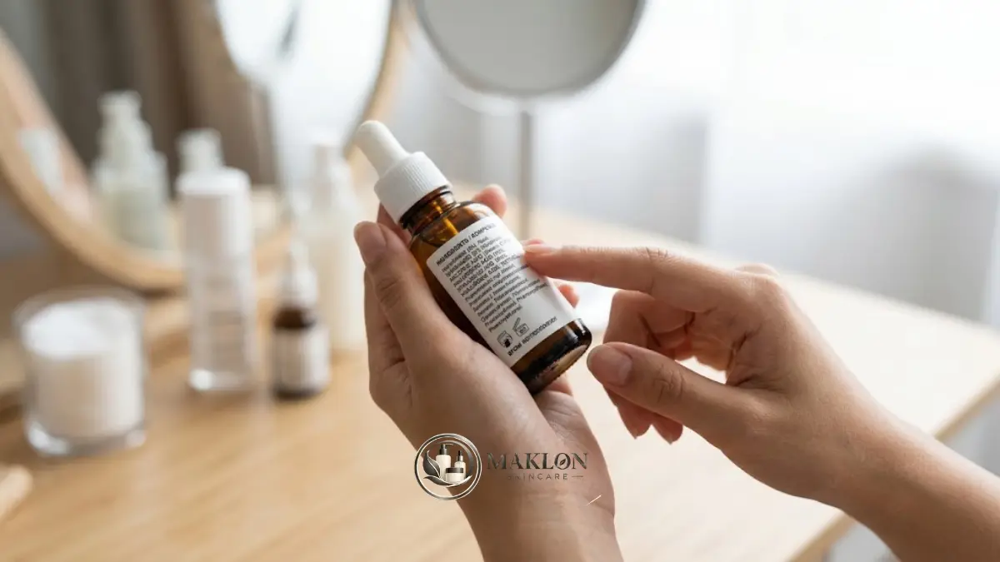

Bedah produk skincare terlaris berarti menilai formula, bahan aktif, dan cara pakai serum atau sunscreen, bukan sekadar mengikuti popularitas penjualan atau ulasan yang ramai.
- SPF 30 menahan sekitar 97 persen sinar UVB dan SPF 50 sekitar 98 persen, menurut dokter kulit Marisa Garshick dalam artikel PolitiFact, Mei 2026.
- American Academy of Dermatology (AAD) menyarankan minimal satu sendok teh sunscreen untuk wajah dan aplikasi ulang setiap dua jam.
- Penelitian Pinnell dkk. (2001) menunjukkan L-ascorbic acid terserap baik pada konsentrasi hingga 20 persen dengan pH di bawah 3,5.
- Serum best seller umumnya memakai vitamin C, niacinamide, asam hialuronat, atau retinol dengan target manfaat berbeda.
- Produk terlaris belum tentu cocok untuk semua kulit, sehingga label dan uji tempel tetap wajib. Informasi ini bersifat umum, bukan nasihat medis.
Mengapa Serum dan Sunscreen Sering Menjadi Produk Terlaris?
Serum dan sunscreen sering menjadi produk terlaris karena serum menargetkan masalah kulit tertentu, sedangkan sunscreen melindungi kulit setiap hari dari paparan sinar ultraviolet matahari.
Ada tiga alasan utama di balik tingginya popularitas dua kategori produk unggulan ini di pasar kecantikan Indonesia.
Pertama, hasilnya terasa nyata. Pengguna bisa merasakan tekstur serum yang ringan dan melihat perubahan kondisi kulit secara bertahap.
Sunscreen memberi rasa aman bagi konsumen karena fungsinya sebagai tameng pelindung kulit dari penuaan dini sudah dikenal luas.
Kedua, kebutuhan berulang. Sunscreen dipakai setiap hari dan perlu diaplikasikan ulang, sehingga botolnya cepat habis dan pembelian terjadi berulang.
Serum juga dipakai rutin pagi dan malam, sehingga pengguna yang merasa puas cenderung melakukan pembelian kembali (repeat order) secara konsisten.
Ketiga, informasi yang mudah dibagikan. Ulasan pengguna, video demonstrasi, dan perbandingan sebelum-sesudah membuat dua kategori ini cepat viral.
Namun, popularitas di media sosial tidak selalu mencerminkan kecocokan formula dengan kulit Anda. Dalam industri maklon skincare, formulasi yang tepat adalah kunci retensi konsumen jangka panjang.
Berapa Persen Perlindungan dari SPF 30 dan SPF 50?
SPF 30 menahan sekitar 97 persen sinar UVB dan SPF 50 sekitar 98 persen, sehingga selisih perlindungan keduanya kecil meski angkanya tampak jauh berbeda.
Angka tersebut disampaikan dokter kulit Marisa Garshick dalam artikel PolitiFact yang terbit pada 26 Mei 2026 lalu.
Dalam artikel yang sama, SPF 100 disebut menahan sekitar 99 persen UVB. Artinya, menaikkan angka SPF tidak otomatis menggandakan perlindungan menjadi dua kali lipat.
Konsekuensinya jelas: memakai SPF 50 tidak membuat Anda boleh berjemur lebih lama tanpa melakukan aplikasi ulang.
Faktor penentu perlindungan sesungguhnya adalah jumlah produk yang dipakai dan kedisiplinan mengoleskan ulang secara teratur.
Dalam praktik sehari-hari, banyak orang mengoleskan lebih sedikit dari takaran yang dianjurkan, sehingga perlindungan nyata dapat jauh lebih rendah dari angka di kemasan.
Untuk takaran ideal, American Academy of Dermatology (AAD) menyarankan minimal satu sendok teh sunscreen untuk area wajah dan leher.
AAD juga merekomendasikan aplikasi ulang setiap dua jam serta segera setelah berenang atau berkeringat hebat saat beraktivitas di luar ruangan.
Bagaimana Formula Sunscreen Best Seller Bekerja?
Sunscreen best seller bekerja dengan menyerap, memantulkan, atau menyebarkan sinar ultraviolet melalui filter UV, sehingga sinar tersebut tidak langsung merusak lapisan kulit.
Terdapat dua kelompok filter UV utama yang umum diformulasikan oleh pabrik maklon skincare profesional.
Filter mineral, seperti zinc oxide dan titanium dioxide, bekerja secara fisik dengan memantulkan dan menyebarkan radiasi sinar matahari di atas permukaan kulit.
Sementara filter kimia, yaitu senyawa organik modern, bekerja dengan menyerap sinar UV lalu mengubahnya menjadi energi panas dalam jumlah kecil yang tidak membahayakan sel.
Banyak produk maklon sunscreen terlaris saat ini menggabungkan kedua jenis filter (formula hybrid) agar spektrum perlindungan lebih luas dan tekstur tetap nyaman di wajah.
Apa Arti Label PA pada Sunscreen?
Label PA menunjukkan tingkat perlindungan terhadap sinar UVA, dan semakin banyak tanda plus (+), semakin tinggi perlindungan UVA yang diklaim produk.
Penting diingat bahwa angka SPF hanya menggambarkan perlindungan terhadap sinar UVB yang memicu kulit terbakar (sunburn).
Sinar UVA menembus jauh lebih dalam ke lapisan dermis dan berkaitan erat dengan risiko penuaan dini (photoaging) serta degradasi kolagen.
Karena itu, selalu pilih sunscreen yang mencantumkan perlindungan spektrum luas (broad spectrum) atau label PA sebagai pelengkap angka SPF.
Mengapa Tekstur Sunscreen Sangat Menentukan?
Tekstur sunscreen menentukan seberapa disiplin Anda memakainya, karena produk yang nyaman cenderung dipakai dalam takaran cukup dan diulang tepat waktu.
Sunscreen terlaris di pasaran biasanya unggul pada sensasi di kulit: ringan, cepat meresap, tidak meninggalkan white cast tebal, dan bebas rasa lengket.
Sebaliknya, sunscreen yang terasa berat dan berminyak sering kali diaplikasikan terlalu tipis oleh pengguna, sehingga efektivitas perlindungan aslinya menurun drastis.
Apa Saja Bahan Aktif yang Sering Ada pada Serum Best Seller?
Serum best seller umumnya mengandung satu atau beberapa bahan aktif populer, yaitu vitamin C, niacinamide, asam hialuronat, dan retinol, dengan target manfaat berbeda.
Setiap bahan aktif memiliki karakteristik molekuler tersendiri yang perlu dipahami secara mendalam oleh pengguna maupun pemilik brand kosmetik.
Memahami sifat bahan aktif membantu Anda menilai secara rasional apakah formula sebuah serum benar-benar sesuai dengan kondisi biologis kulit Anda.
Apa Fungsi Vitamin C pada Serum?
Vitamin C pada serum berfungsi sebagai antioksidan kuat yang membantu melindungi sel kulit dari kerusakan akibat radikal bebas dan membuat kulit tampak lebih cerah serta merata.
Bentuk vitamin C yang paling banyak diteliti khasiat klinisnya adalah asam L-askorbat (L-ascorbic acid).
Studi ilmiah dari Pinnell dan kolega (2001) tentang penyerapan perkutan melaporkan bahwa penyerapan terbaik dicapai pada konsentrasi hingga 20 persen.
Penelitian tersebut juga menemukan bahwa L-ascorbic acid harus diformulasikan pada tingkat keasaman (pH) di bawah 3,5 agar molekulnya dapat menembus stratum korneum kulit.
Selain bentuk murni, ada pula turunan vitamin C yang lebih stabil dan lembut, seperti magnesium ascorbyl phosphate dan ascorbyl glucoside, yang sering diformulasikan untuk kulit sensitif.
Vitamin C murni sangat mudah teroksidasi oleh paparan udara dan sinar matahari. Kemasan botol gelap atau pompa kedap udara biasanya menjadi tanda formula yang dirancang menjaga kestabilan bahan aktif.
Apa Fungsi Niacinamide pada Serum?
Niacinamide adalah bentuk vitamin B3 yang dikenal membantu memperkuat sawar pertahanan kulit (skin barrier), mengendalikan produksi minyak berlebih, dan meratakan warna kulit.
Secara umum, produk terlaris di pasaran memakai konsentrasi niacinamide efektif pada kisaran sekitar 2 hingga 5 persen.
Konsentrasi yang lebih tinggi tidak otomatis memberikan hasil lebih cepat, dan pada sebagian individu, kadar yang terlalu tinggi justru dapat memicu kemerahan atau iritasi ringan.
Sifat niacinamide sangat stabil dan fleksibel, menjadikannya pilihan utama dalam formulasi maklon serum untuk kulit berminyak, berjerawat ringan, maupun kulit kusam.
Apa Fungsi Asam Hialuronat pada Serum?
Asam hialuronat berfungsi sebagai humektan luar biasa yang mampu menarik dan mengikat molekul air di permukaan kulit sehingga kulit terasa kenyal, lembap, dan terhidrasi.
Bahan ini memiliki tingkat toleransi yang sangat tinggi dan aman untuk hampir semua tipe kulit, termasuk kulit berminyak yang mengalami dehidrasi.
Setelah mengoleskan serum asam hialuronat, sangat disarankan untuk menguncinya dengan moisturizer agar hidrasi tidak mudah menguap, terutama bila Anda sering berada di ruangan ber-AC.
Apa Fungsi Retinol pada Serum?
Retinol adalah turunan vitamin A yang efektif merangsang pergantian sel kulit baru, menyamarkan tampilan garis halus, dan menjaga tekstur kulit tetap kencang.
Retinol tergolong bahan aktif yang kuat dengan efek adaptasi awal seperti kulit terasa kering, sedikit mengelupas, atau kemerahan ringan.
Oleh karena itu, pemakaian retinol sebaiknya dimulai bertahap, misalnya dua sampai tiga malam dalam seminggu, lalu ditingkatkan frekuensinya seiring meningkatnya toleransi kulit.
Perlu digarisbawahi bahwa retinol tidak disarankan untuk wanita hamil atau menyusui, sehingga konsultasi dengan dokter menjadi langkah yang bijak sebelum pemakaian.
Bagaimana Cara Membedah Label Produk Skincare Sebelum Membeli?
Membedah label skincare dilakukan dengan membaca urutan komposisi, memeriksa bahan aktif utama, mengecek nomor notifikasi BPOM, dan mencocokkan klaim produk dengan fungsi bahan.

Langkah praktis yang dapat Anda terapkan sebelum memutuskan membeli produk baru antara lain:
- Baca daftar komposisi (ingredients): Bahan disusun berurutan dari konsentrasi tertinggi ke terendah. Bahan aktif yang diunggulkan di kemasan depan idealnya tercantum pada urutan atas daftar.
- Cek bahan yang berpotensi memicu reaksi: Perhatikan keberadaan pewangi (fragrance) yang tajam atau alkohol sederhana bila Anda memiliki kulit reaktif atau sensitif.
- Periksa nomor notifikasi BPOM: Pastikan keaslian nomor izin edar melalui aplikasi atau portal resmi BPOM sesuai standar syarat BPOM skincare.
- Perhatikan tanggal kedaluwarsa & simbol PAO: Simbol wadah terbuka (Period After Opening) menunjukkan berapa bulan produk masih layak digunakan setelah segel dibuka.
- Waspadai klaim kosmetik hiperbolis: Hindari produk dengan janji hasil instan permanen atau jaminan medis menyembuhkan, karena produk kosmetik tidak berfungsi sebagai obat keras.
Apa Perbedaan Fungsi Serum dan Sunscreen?
Serum berfungsi merawat masalah kulit tertentu secara intensif, sedangkan sunscreen berfungsi melindungi kulit dari radiasi UV, sehingga keduanya saling melengkapi dan tidak dapat saling menggantikan.
| Aspek | Serum Wajah | Sunscreen (Tabir Surya) |
|---|---|---|
| Fungsi utama | Merawat masalah spesifik kulit (jerawat, flek, hidrasi, kerutan) | Melindungi lapisan kulit dari kerusakan radiasi sinar UV |
| Waktu pakai | Pagi, malam, atau keduanya sesuai karakter bahan aktif | Pagi hari, diulang setiap 2 jam selama beraktivitas di luar ruang |
| Bahan khas | Vitamin C, niacinamide, asam hialuronat, retinol, peptide | Zinc oxide, titanium dioxide, filter UV organik (avobenzone, ensulizole) |
| Tolok ukur | Konsentrasi bahan aktif, stabilitas formula, kecocokan jenis kulit | Tingkat SPF, nilai PA, broad spectrum, serta kenyamanan tekstur |
| Risiko jika salah pilih | Iritasi, kemerahan, atau tidak ada perubahan hasil nyata | Perlindungan kurang maksimal, timbul white cast, atau kulit kusam berminyak |
Bagaimana Memilih Serum dan Sunscreen Sesuai Jenis Kulit?
Pilih serum dan sunscreen berdasarkan jenis kulit dan masalah utama yang ingin ditangani, bukan semata-mata melihat peringkat produk terlaris di pasar.
Berikut panduan praktis pemilihan formula yang dapat disesuaikan dengan kondisi kulit Anda:
- Kulit berminyak: Gunakan serum niacinamide dengan formulasi water-based dan padukan dengan sunscreen bertekstur gel atau fluid yang cepat menyerap.
- Kulit kering: Pilih serum asam hialuronat berkonsentrasi baik dan lengkapi dengan sunscreen yang diperkaya bahan pelembap seperti ceramide.
- Kulit sensitif: Prioritaskan serum dengan komposisi minimal (minimalist formula) serta sunscreen fisik berfilter mineral, dan hindari pewangi buatan.
- Kulit kusam: Kombinasikan serum vitamin C stabil di pagi hari dengan penggunaan tabir surya disiplin untuk mencegah hiperpigmentasi.
- Kulit berjerawat: Gunakan serum bertekstur cair yang tidak menyumbat pori, didukung sunscreen berlabel non-comedogenic dan bebas minyak berlebih.
Sebelum mengaplikasikan produk baru ke seluruh wajah, biasakan melakukan uji tempel (patch test) pada area belakang telinga atau lipatan siku selama 2 hingga 3 hari.
Apa Kesalahan Umum Saat Memakai Serum dan Sunscreen?
Kesalahan umum pemakaian serum dan sunscreen adalah menumpuk terlalu banyak bahan aktif, mengoleskan sunscreen terlalu tipis, dan lupa mengulang aplikasi sunscreen selama beraktivitas.
Beberapa kekeliruan yang paling sering ditemui dalam perawatan harian meliputi:
- Menumpuk beberapa jenis serum berbahan aktif kuat dalam satu rutinitas, sehingga merusak keseimbangan skin barrier.
- Mengabaikan pemakaian sunscreen setelah memakai serum eksfoliasi atau retinol, padahal kulit berada dalam kondisi rentan terhadap sengatan matahari.
- Menggunakan sunscreen di bawah takaran anjuran medis. Rekomendasi AAD menyarankan takaran minimal satu sendok teh untuk wajah dan leher.
- Tidak melakukan aplikasi ulang tabir surya setiap dua jam sekali atau setelah berenang dan berkeringat.
- Membeli produk hanya karena tren viral di media sosial tanpa mengecek kecocokan formula dengan kondisi kulit pribadi.
Apa Tips Praktis agar Hasil Serum dan Sunscreen Lebih Maksimal?
Hasil pemakaian serum dan sunscreen akan optimal bila diterapkan secara konsisten, dalam takaran tepat, dengan urutan benar, serta didukung gaya hidup sehat.
Berikut tips aplikatif yang dapat langsung Anda praktikkan:
- Perkenalkan produk baru satu per satu dengan jeda beberapa minggu agar mudah mendeteksi reaksi alergi pada kulit.
- Aplikasikan serum saat kulit wajah masih sedikit lembap (damp skin) untuk mengoptimalkan daya serap molekul humektan.
- Posisikan tabir surya sebagai langkah paling akhir dalam urutan perawatan kulit pagi hari sebelum merias wajah.
- Simpan wadah produk di tempat yang sejuk dan terlindung dari paparan cahaya matahari langsung, khususnya untuk serum berbahan dasar vitamin C.
- Berikan waktu minimal 4 hingga 8 minggu sebelum mengevaluasi hasil akhir, karena proses regenerasi alami kulit memerlukan waktu bertahap.
Kapan Perlu Berkonsultasi dengan Dokter Kulit?
Konsultasi dengan dokter kulit diperlukan ketika iritasi tidak membaik, jerawat parah tak kunjung reda, tahi lalat mengalami perubahan bentuk, atau bila Anda sedang hamil dan menyusui.
Artikel ini hanya menyajikan informasi edukasi umum dan tidak dimaksudkan sebagai pengganti diagnosis medis formal dari tenaga kesehatan profesional.
Segera hentikan pemakaian produk apabila muncul gejala kemerahan hebat, pembengkakan, rasa perih membakar yang menetap, atau ruam gatal, lalu segera konsultasikan ke dokter spesialis kulit.
Kesimpulan & Poin Kunci Bedah Produk Terlaris
Bedah produk skincare terlaris dimulai dari evaluasi formula ilmiahnya, bukan sekadar melihat peringkat penjualan atau ulasan yang sedang ramai di media sosial.
SPF 30 menahan sekitar 97 persen sinar UVB dan SPF 50 sekitar 98 persen, sehingga takaran pakai yang cukup dan disiplin mengoleskan ulang jauh lebih menentukan efektivitas perlindungan daripada selisih angka semata.
Serum bekerja menargetkan masalah kulit melalui bahan aktif spesifik seperti vitamin C, niacinamide, asam hialuronat, dan retinol dengan konsentrasi yang proporsional.
Selalu gunakan takaran minimal satu sendok teh sunscreen untuk area wajah dan ulangi setiap dua jam saat beraktivitas di luar ruangan.
Lakukan uji tempel secara mandiri, perkenalkan produk secara bertahap, dan segera konsultasikan dengan dokter spesialis kulit bila muncul keluhan yang menetap.